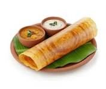
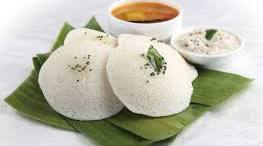
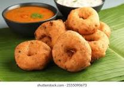
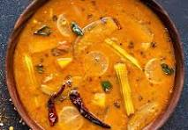
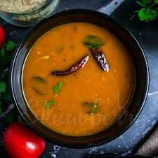
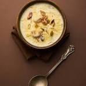
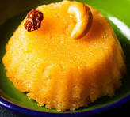

A thin, crispy South Indian crepe made from fermented rice and lentil batter, served with chutneys and sambar.
Dosa Recipe
Soft, fluffy steamed rice cakes made from fermented rice and lentils, enjoyed as a light and wholesome breakfast.
Idli Recipe
Golden, savory lentil fritters with a crisp exterior and soft center, often paired with chutney and sambar.
Vada Recipe
A hearty South Indian lentil and vegetable stew flavored with aromatic spices and tamarind.
Sambar Recipe
A tangy and spiced South Indian soup made with tamarind, tomatoes, and pepper.
Rasam Recipe
A traditional Indian dessert made with milk, vermicelli or rice, sweetened and flavored with cardamom and nuts.
Payasam Recipe
A classic South Indian dessert made with roasted semolina, ghee, sugar, and saffron, known for its rich flavor and vibrant color.
Rava Kesari Recipe